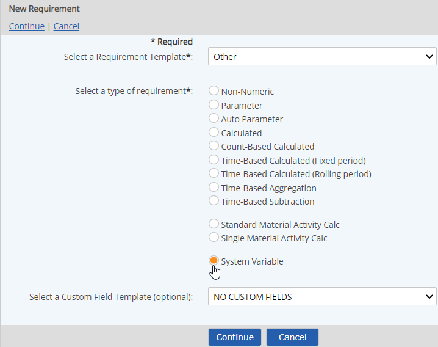
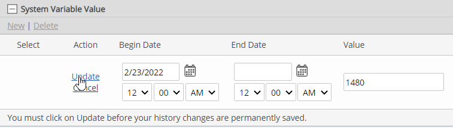

Select System Variable for the type.
To apply user-defined custom fields, select a Custom Field Template to apply. See Custom Field Templates.
Click Continue.

Enter a Name.
You can add translated values for localization by clicking on the language symbol  .
.
Optionally you may specify Active Date/Inactive Dates (the begin and end dates that the requirement applies.
In the Requirement Source section you can further define the requirement driver by selecting the Specific Citation and specifying a Periodicity. See Periodicity in Calculated Requirements.
Click the plus sign (+) in the System Variable Value bar, then click New.

Enter the Value and specify the Begin Date (the date to start using the value).
The value can only be used in a calculation from the specified begin date. It is not necessary to enter an End Date. If the variable value changes, the requirement can be edited to supply an end date for the current value and define a new value with new active date.

Complete other fields as applicable.